00读前一分钟 · 全文脉络（做完题再看也行）
①段 现象：想去英国最大的连锁书店水石（Waterstones）买梅根的童书《长椅》、克林顿与帕特森合写的惊悚小说《总统的女儿》？可能得在店里找上一阵——这两本书都由企鹅兰登（PRH）出版，而 PRH 正和水石僵持不下（31 题：两本书是引子，引出的是这场对峙）。
②段 起因：去年底 PRH 先动手——给水石设了赊购额度限制，而且限得很死；随后水石各分店把 PRH 的书从桌台、展区、橱窗这些显眼处撤下，悄悄放回书架上的所属分区（32 题：先发制人 → 反制）。
③段 一方的声音：PRH 拒绝置评，只有水石发言人说话——PRH 是全英唯一限制我们进货的出版商；我们没抵制它的书，库存少了也尽力保证供应；如今门店重开，希望一切恢复正常、能按正常方式进货；店里生意火爆，5 月「月度之书」销量创 2018 年来新高（33 题：言外之意＝该把限制撤了）。
④段 输家：吃亏的是 PRH 的作者——大牌作者影响不大，靠水石店员热心推荐的中游作者才盼着纠纷快点结束（34 题：没人推，销量就掉）。
⑤⑥⑦段 更大的担忧：这场纠纷来得不是时候——作者们本就担心 PRH 与西蒙与舒斯特的拟议合并：独立出版商变少，竞价少了、预付款低了、出的书更雷同。经纪人 Lownie：这是权力集中大趋势的一部分；出版业不光要作者和员工多元，还要出书渠道多元——好书多出自小出版社（35 题）。作者收尾：多元会不会成为「做大才能通吃」的牺牲品，拭目以待。
📌 一句话主旨：书店和出版商斗气，作者（尤其不出名的）先受伤；而出版商合并、做大，会让出版的多样性付出更大代价。
📌 结构套路：现象 → 起因 → 一方表态 → 受害者 → 更大的同类隐患 → 专家定性 → 留白收尾。五道题顺序出题：31①、32②、33③、34④、35⑥（⑤段是 35 题 This 的回指对象）。
📌 和同卷 T1、T2 比一比：前两篇都是「正反两人＋一位专家」；本篇也是两方加一位专家，但有一方不开口（PRH declined to comment）——只听到水石一方的话，33 题正是在考：纠纷一方的公开表态，真正想说的是什么。
📌 结构套路：现象 → 起因 → 一方表态 → 受害者 → 更大的同类隐患 → 专家定性 → 留白收尾。五道题顺序出题：31①、32②、33③、34④、35⑥（⑤段是 35 题 This 的回指对象）。
📌 和同卷 T1、T2 比一比：前两篇都是「正反两人＋一位专家」；本篇也是两方加一位专家，但有一方不开口（PRH declined to comment）——只听到水石一方的话，33 题正是在考：纠纷一方的公开表态，真正想说的是什么。
🗞 背景（WebSearch 核过，只帮读、不替原文纠错）：PRH 在 2020 年第四季度给水石设了赊购限制；《书商》（The Bookseller）报道水石因此不再给 PRH 的书做推广——它的「月度之书」从年初起一本 PRH 的书都没有。⟹ ③❺ 那句「5 月月度之书销量创新高」其实是在说：没有 PRH，我们照样卖得很好——底气十足地要对方松绑（33B）。两家在 2021 年 6 月 4 日发联合声明宣布「恢复正常」，恰好是本文见报当天。至于⑤段的合并：2022 年 10 月 31 日美国联邦法官以「削弱竞争」为由裁定阻止，当年 11 月交易告吹——Lownie 担心的事，法院也担心。
01原文精读
🟡 黄色高亮 = 重难点词/短语，点击右侧出卡片 ｜ 蓝色虚线 = 长难句，点击跳到精析 ｜ 每段「意」= 段落意译 ｜ 选中任意其他单词浮出「查有道」 ｜ 原文由你的浏览器从原卷识别成文字（首次约 3 秒，之后秒开）；「原卷对照」可逐句看扫描原图、改识别错字
①
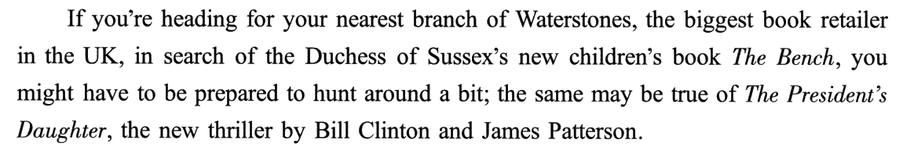
🟡 heading for · branch · book retailer · in search of · Duchess of Sussex · hunt around a bit · thriller
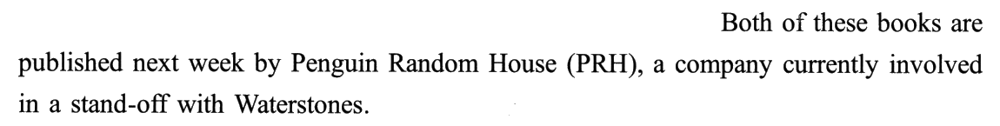
🟡 involved in · stand-off
①段意：如果你正要去离家最近的水石书店（英国最大的图书零售商），想找苏塞克斯公爵夫人的新童书《长椅》，可能得做好在店里翻找一阵的准备；找克林顿与詹姆斯·帕特森合写的新惊悚小说《总统的女儿》，恐怕也一样。这两本书下周都由企鹅兰登书屋（PRH）出版——而这家公司眼下正和水石僵持不下。
②
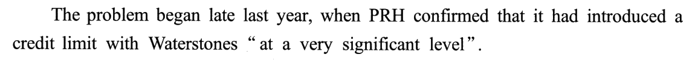
🟡 confirmed · introduced · credit limit · significant level
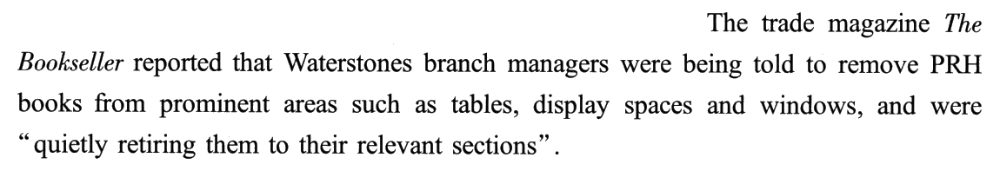
🟡 trade magazine · prominent · display spaces · retiring · relevant sections
②段意：事情始于去年年底：PRH 证实，它对水石设了赊购额度限制，而且限得「非常狠」。行业杂志《书商》报道，水石各分店经理接到指示，把 PRH 的书从桌台、展示区、橱窗这些显眼位置撤下，「悄悄把它们退回书架上的所属分区」。
③
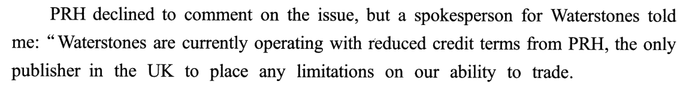
🟡 declined to comment · spokesperson · operating · credit terms · limitations
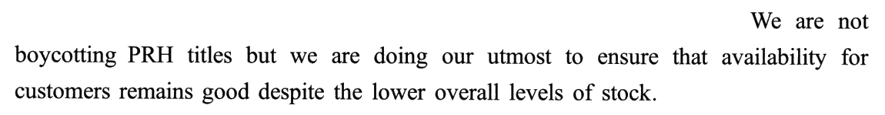
🟡 boycotting · titles · doing our utmost · availability · stock
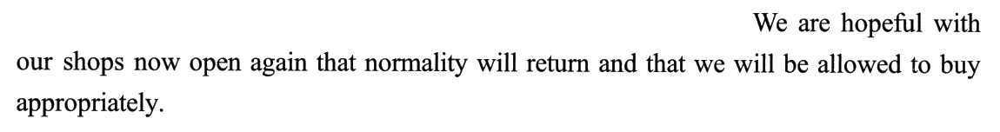
🟡 hopeful · normality · appropriately
🟡 exceptionally
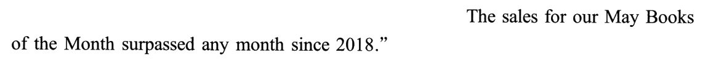
🟡 surpassed
③段意：PRH 对此不予置评，但水石的一位发言人告诉我：「PRH 缩短了给我们的赊购账期，我们眼下就是在这种条件下经营——在英国，它是唯一一家限制我们进货能力的出版商。我们没有抵制 PRH 的书，尽管整体库存水平降了，我们仍在尽最大努力保证顾客买得到。如今门店重新开张，我们希望一切回归正常，希望我们能按正常的方式进货。可以肯定的是，我们的门店生意格外红火：5 月『月度之书』的销量超过了 2018 年以来的任何一个月。」
④
🟡 In the meantime · losers
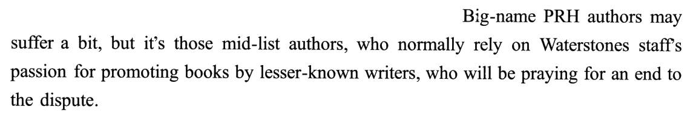
🟡 Big-name · mid-list · rely on · passion · promoting · lesser-known · praying for · dispute
④段意：与此同时，吃亏的是 PRH 旗下的作者。大牌作者也许只受点小影响；真正盼着纠纷早日结束的，是那些中游作者——平时全靠水石店员热心推荐不太出名的作家的书。
⑤
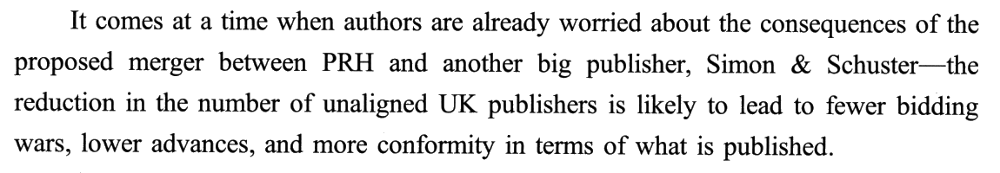
🟡 It comes at a time when · consequences · proposed merger · unaligned · bidding wars · advances · conformity · in terms of
⑤段意：这场纠纷来得正不是时候：作者们本就在担心 PRH 与另一家大出版商西蒙与舒斯特拟议合并的后果——英国独立出版商一少，抢稿子的竞价就少，给作者的预付款就低，出版的书也会越来越千篇一律。
⑥
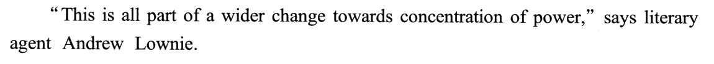
🟡 concentration of power · literary agent
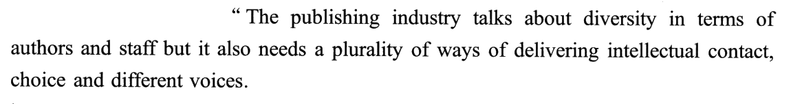
🟡 diversity · plurality · delivering · intellectual
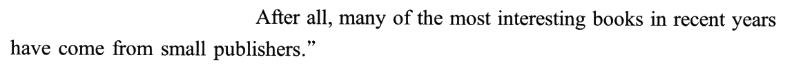
🟡 After all
⑥段意：「这都是权力日趋集中这一更大变化的一部分。」作品经纪人安德鲁·劳尼说，「出版业总在谈作者和员工的多元，可它同样需要多种多样的渠道，把思想、选择和不同的声音送到读者面前。毕竟，近些年最有意思的书里，很多出自小出版社。」
⑦
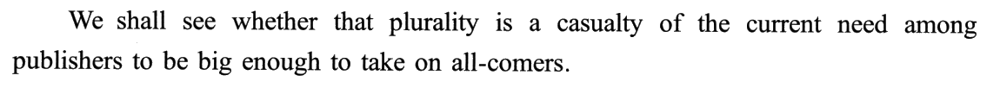
🟡 We shall see whether · casualty · take on all-comers
⑦段意：出版商们眼下都觉得必须做大、大到什么对手都接得住——这种多元会不会因此成为牺牲品，我们拭目以待。
02题目与解析（点选项即判 · 再看解析）
例子作用31. The author mentions two books in Paragraph 1 to present ______.
[A] an ongoing conflict.
[B] an intellectual concept.
[C] a prevailing sentiment.
[D] a literary phenomenon.
答案 A ①❶ 只说「这两本书在水石不好找」，没说为什么；①❷ 点出原因：两本书都是 PRH 出的，而 PRH currently involved in a stand-off with Waterstones。currently ≈ ongoing，stand-off ≈ conflict ⟹ A。
干扰项：B 只能靠 thriller（惊悚小说）一个词硬凑「概念」——两本书是具体的商品，段里没有任何抽象概念；何况《长椅》是童书。C「盛行的情绪」——①❶ 说的是找书要费点工夫，是一件事实，不是一种普遍情绪。D 照搬 children's book、thriller 的「文学」色彩——这两本书恰好一童一惊悚，作者选它们是因为名人＋同一出版商，不是为了说明什么文学现象。
技巧：例子题问「为了什么」，答案在例子后面：例子在①❶，用意在①❷。再往后看三段的开头——②❶ The problem began、③❶ on the issue，都在接这个 stand-off ⟹ 全文要讲的就是这场纠纷。
📕 与书解析的商榷：书排除 B 说「第一段并非重在介绍这一概念」，其实 B 连原料都没有，排除得更干脆。
干扰项：B 只能靠 thriller（惊悚小说）一个词硬凑「概念」——两本书是具体的商品，段里没有任何抽象概念；何况《长椅》是童书。C「盛行的情绪」——①❶ 说的是找书要费点工夫，是一件事实，不是一种普遍情绪。D 照搬 children's book、thriller 的「文学」色彩——这两本书恰好一童一惊悚，作者选它们是因为名人＋同一出版商，不是为了说明什么文学现象。
技巧：例子题问「为了什么」，答案在例子后面：例子在①❶，用意在①❷。再往后看三段的开头——②❶ The problem began、③❶ on the issue，都在接这个 stand-off ⟹ 全文要讲的就是这场纠纷。
📕 与书解析的商榷：书排除 B 说「第一段并非重在介绍这一概念」，其实 B 连原料都没有，排除得更干脆。
动作原因32. Why did Waterstones shops retire PRH books to their relevant sections?
[A] To make them easily noticeable.
[B] To comply with PRH’s requirement.
[C] To respond to PRH’s business move.
[D] To arrange them in a systematic way.
答案 C 题干动作在②❷：分店把 PRH 的书quietly retiring them to their relevant sections。原因要往前一句找：②❶ The problem began late last year，PRH 先设了 credit limit（had introduced 用过去完成时，动作在前）。先有 PRH 卡进货，后有水石撤展位 ⟹ 一来一回，C「回应 PRH 的商业举动」。
干扰项：A 方向反：书是从 prominent areas（显眼处）撤走的，正是为了让它们不显眼。B 原文没有任何「PRH 要求水石这样做」的字样——PRH 只管赊购额度，撤展位是水石自己的动作。D 只看了 relevant sections「所属分区」的字面，把一场对抗读成了整理书架。
技巧：问「为什么做某事」，先找谁先动的手。本段两句的时态就是线索：had introduced（过去完成）在前，were being told（过去进行）在后。再用 quietly 一词核对——悄悄撤掉，是不想声张的反制，不是例行整理。
📕 与书解析的商榷：书说 B 错在「发令者实为水石（总部）」——原文 were being told to 是被动，没写发令者（《书商》也只是转述）；更稳的判据是：PRH 的举动原文只写了 credit limit 一件，「PRH 的要求」无从说起。
干扰项：A 方向反：书是从 prominent areas（显眼处）撤走的，正是为了让它们不显眼。B 原文没有任何「PRH 要求水石这样做」的字样——PRH 只管赊购额度，撤展位是水石自己的动作。D 只看了 relevant sections「所属分区」的字面，把一场对抗读成了整理书架。
技巧：问「为什么做某事」，先找谁先动的手。本段两句的时态就是线索：had introduced（过去完成）在前，were being told（过去进行）在后。再用 quietly 一词核对——悄悄撤掉，是不想声张的反制，不是例行整理。
📕 与书解析的商榷：书说 B 错在「发令者实为水石（总部）」——原文 were being told to 是被动，没写发令者（《书商》也只是转述）；更稳的判据是：PRH 的举动原文只写了 credit limit 一件，「PRH 的要求」无从说起。
言外之意33. What message does the spokesperson for Waterstones seem to convey?
[A] Their customers remain loyal.
[B] The credit limit will be removed.
[C] Their stock is underestimated.
[D] The book market is rather slack.
答案 B seem to convey ＝ 问言外之意，正确项在原文找不到原词，要推。发言人五句话分三层：
① 诉苦（❶❷）：PRH 是全英唯一限制我们进货的出版商；我们没有抵制它的书，库存少了也尽力供货——先摆出「我们没错」的姿态。
② 提要求（❸）：门店重开了，希望 normality will return、希望 we will be allowed to buy appropriately——「被允许正常进货」，就是盼 PRH 解除限制。
③ 亮底牌（❹❺）：店里格外忙，5 月月度之书销量创 2018 年来新高——生意好、付得起钱，没有理由再限我们的额度。
三层合起来：该把赊购限制撤了（而且看样子会撤）⟹ B。
干扰项：A 两种误读：把 availability for customers（对顾客的供货）读成顾客的态度；或把 we will be allowed to buy 的 we 当成顾客。全段没一个字谈顾客忠不忠诚。C 偷换：原文是 lower overall levels of stock（库存降了），不是「被低估」。D 与❹❺ 直接相反——店里忙、销量创新高，市场一点不萧条；何况说的只是水石自家门店。
技巧：推理题三步——① 看说话人身份（纠纷的一方，说话必有目的）；② 看背景（our shops now open again ⟹ 疫情封锁后重开）；③ 把几句话串成一个诉求。Certainly 一词也在提示：前面是请求，后面是撑腰的事实。
🗞 背景佐证：据《书商》，水石的「月度之书」从年初起已不再选 PRH 的书 ⟹ ❺ 的销量新高是在没有 PRH 的情况下创下的——这句话是摆给 PRH 看的筹码。
📕 与书解析的商榷：书说 B 是「合理推理」，但 will be removed 是很确定的说法，原文只是 hopeful。更准确的理解：这是发言人想传达的信息（题干 convey），不是事实判断——题干问的是 message，所以确定语气也成立。
① 诉苦（❶❷）：PRH 是全英唯一限制我们进货的出版商；我们没有抵制它的书，库存少了也尽力供货——先摆出「我们没错」的姿态。
② 提要求（❸）：门店重开了，希望 normality will return、希望 we will be allowed to buy appropriately——「被允许正常进货」，就是盼 PRH 解除限制。
③ 亮底牌（❹❺）：店里格外忙，5 月月度之书销量创 2018 年来新高——生意好、付得起钱，没有理由再限我们的额度。
三层合起来：该把赊购限制撤了（而且看样子会撤）⟹ B。
干扰项：A 两种误读：把 availability for customers（对顾客的供货）读成顾客的态度；或把 we will be allowed to buy 的 we 当成顾客。全段没一个字谈顾客忠不忠诚。C 偷换：原文是 lower overall levels of stock（库存降了），不是「被低估」。D 与❹❺ 直接相反——店里忙、销量创新高，市场一点不萧条；何况说的只是水石自家门店。
技巧：推理题三步——① 看说话人身份（纠纷的一方，说话必有目的）；② 看背景（our shops now open again ⟹ 疫情封锁后重开）；③ 把几句话串成一个诉求。Certainly 一词也在提示：前面是请求，后面是撑腰的事实。
🗞 背景佐证：据《书商》，水石的「月度之书」从年初起已不再选 PRH 的书 ⟹ ❺ 的销量新高是在没有 PRH 的情况下创下的——这句话是摆给 PRH 看的筹码。
📕 与书解析的商榷：书说 B 是「合理推理」，但 will be removed 是很确定的说法，原文只是 hopeful。更准确的理解：这是发言人想传达的信息（题干 convey），不是事实判断——题干问的是 message，所以确定语气也成立。
后果推断34. What can be one consequence of the current dispute?
[A] Sales of books by mid-list PRH writers fall off considerably.
[B] Lesser-known PRH writers become the target of criticism.
[C] Waterstones staff hesitate to promote big-name authors’ books.
[D] Waterstones branches suffer a severe reduction in revenue.
答案 A 题干没给段落 ⟹ 按题文同序到④段，consequence ↔ ④❶ PRH authors have been the losers。④❷ 分两类：大牌作者 may suffer a bit（受点小影响）；中游作者平时靠水石店员热心推荐——现在店员不推 PRH 的书了（②段撤展位）⟹ 他们的书卖不动 ⟹ 才会 praying for an end to the dispute。A「中游作者的书销量大幅下滑」是这条因果链的结论。
干扰项：B 由 losers、praying 的负面气氛捏造出「被批评」——他们是受损，不是受批评。C 把对象换了：原文说店员热心推荐的是不太出名的作者，C 换成了大牌作者；况且大牌作者只是 suffer a bit。D 换了受害者：受损的是 PRH 的作者，不是水石的门店——③❹❺ 刚说完门店生意火爆。
技巧：后果题盯住「谁受损、受损多少」：本段是「总（作者是输家）—分（大牌一点点 vs 中游很严重）」，对比句里程度重的那一方就是答案所在。题干 can be 允许推一步（没人推荐 ⟹ 销量下滑），但不能换主体。
干扰项：B 由 losers、praying 的负面气氛捏造出「被批评」——他们是受损，不是受批评。C 把对象换了：原文说店员热心推荐的是不太出名的作者，C 换成了大牌作者；况且大牌作者只是 suffer a bit。D 换了受害者：受损的是 PRH 的作者，不是水石的门店——③❹❺ 刚说完门店生意火爆。
技巧：后果题盯住「谁受损、受损多少」：本段是「总（作者是输家）—分（大牌一点点 vs 中游很严重）」，对比句里程度重的那一方就是答案所在。题干 can be 允许推一步（没人推荐 ⟹ 销量下滑），但不能换主体。
人物观点35. Which of the following statements best represents Lownie’s view?
[A] Small publishers ought to stick together.
[B] Big publishers will lose their dominance.
[C] The publishing industry is having a hard time.
[D] The merger of publishers is a worrying trend.
答案 D ⑥❶ 开头的 This 要先回指⑤段：PRH 与西蒙与舒斯特拟议合并，后果是竞价少、预付款低、出书雷同。Lownie 把它定性为 a wider change towards concentration of power——合并是趋势（wider change）；❷ 出版业需要 a plurality of ways，❸ 好书多出自小出版社——集中会伤害多元，所以令人担忧。trend ↔ change，worrying ↔ ⑤段 already worried ⟹ D。
干扰项：A 由❸ small publishers 编出「应该抱团」——Lownie 只说好书多出自小出版社，没给小出版社出任何主意。B 方向反：合并是让大出版商更大、权力更集中，不是失去主导。C 把 it also needs a plurality（它也需要多元）夸大成「行业日子不好过」——Lownie 谈的是结构问题，不是行业景气。
技巧：人物观点题若定位句以 This / It 开头，先回读上一段，弄清 This 指什么，再看人物给它贴了什么标签（concentration of power）。末段作者的话可以反证：⑦段担心多元会成为 casualty（牺牲品）——作者与 Lownie 立场一致，都在担心。
📕 与书解析的商榷：书说合并「增强了其主导地位」——原文是 proposed merger（拟议中的合并），当时还没发生（后来在 2022 年被美国法院叫停）；D 用 trend（趋势）而不是 fact，措辞恰好留了这个余地。
干扰项：A 由❸ small publishers 编出「应该抱团」——Lownie 只说好书多出自小出版社，没给小出版社出任何主意。B 方向反：合并是让大出版商更大、权力更集中，不是失去主导。C 把 it also needs a plurality（它也需要多元）夸大成「行业日子不好过」——Lownie 谈的是结构问题，不是行业景气。
技巧：人物观点题若定位句以 This / It 开头，先回读上一段，弄清 This 指什么，再看人物给它贴了什么标签（concentration of power）。末段作者的话可以反证：⑦段担心多元会成为 casualty（牺牲品）——作者与 Lownie 立场一致，都在担心。
📕 与书解析的商榷：书说合并「增强了其主导地位」——原文是 proposed merger（拟议中的合并），当时还没发生（后来在 2022 年被美国法院叫停）；D 用 trend（趋势）而不是 fact，措辞恰好留了这个余地。
03长难句精析（正文蓝色虚线句）
s1（①❶）
- 两个分句：分号前
If you’re heading for …, you might have to be prepared to hunt around a bit；分号后the same may be true of The President’s Daughter——the same 指「也得找一阵」。 - if 从句里两个同位语：
Waterstones, the biggest book retailer in the UK（水石＝英国最大图书零售商）；后半The President’s Daughter, the new thriller by …（书名＝谁写的新惊悚小说）。 in search of …作目的状语：去找……；hunt around a bit——hunt 不是打猎，是四处翻找，a bit 把语气放轻。- ⭐ 31 题：这一整句只交代「找书难」，不说原因——原因留给下一句的 stand-off。
意：如果你正要去最近的水石分店（英国最大的图书零售商）找苏塞克斯公爵夫人的新童书《长椅》，可能得做好在店里翻找一阵的准备；找克林顿和帕特森合写的新惊悚小说《总统的女儿》，恐怕也是如此。
s2（②❷）
- 主干：
The trade magazine The Bookseller reported that …——that 宾语从句里是主体。 - 从句主语
Waterstones branch managers，带两个并列谓语：were being told to remove PRH books from prominent areas＋were “quietly retiring them to …”。 such as tables, display spaces and windows——列举 prominent areas（桌台、展区、橱窗）。- ⭐ were being told 是被动，没说谁下的令；remove … from prominent areas 与 retire … to relevant sections 是同一个动作的两种说法——一个是「从哪撤」，一个是「放回哪」（32A 的方向错就在这）。
意：行业杂志《书商》报道，水石各分店经理接到指示，要把 PRH 的书从桌台、展区、橱窗等显眼位置撤下，他们正「悄悄把这些书退回书架上的所属分区」。
s3（③❶）
- but 连接两方：
PRH declined to comment on the issue（PRH 不说）buta spokesperson for Waterstones told me（水石说）——全文只有一方发声。 - 引语主干：
Waterstones are currently operating with reduced credit terms from PRH——operate with … 在……条件下经营；Waterstones 作公司名、谓语用复数 are（英式用法，把公司看成一群人）。 PRH, the only publisher in the UK to place any limitations on …——同位语 ＋ 不定式后置定语：唯一一家限制我们的出版商。only ＋ any 一起用，语气很重。
意：PRH 对此拒绝评论，但水石的一位发言人告诉我：「PRH 缩短了给我们的赊购账期，我们目前正在这种条件下经营——在英国，它是唯一一家限制我们进货能力的出版商。」
s4（③❷）
- not … but …：
We are not boycotting PRH titles（先否认）but（再表功）we are doing our utmost to ensure that …。 - that 从句：
availability for customers remains good——availability for customers ＝（书）对顾客的可得性，即「顾客买得到」；33A 把它读成了顾客对书店的态度。 despite the lower overall levels of stock——让步状语：尽管总体库存水平降低（33C 偷换成「被低估」）。
意：我们并没有抵制 PRH 的书，相反，尽管整体库存水平降低，我们仍在尽最大努力保证顾客买得到。
s5（③❸）
- 主干：
We are hopeful … that normality will return and that we will be allowed to …——be hopeful that 后接两个并列的 that 从句，第二个 that 不能省，否则意思会含混。 with our shops now open again——with 复合结构作背景状语：既然门店已经重开（疫情封锁之后）。- ⭐
be allowed to buy appropriately——被允许正常进货 ⟹ 现在不被允许 ⟹ 盼对方松绑：33B 的推理起点。
意：如今门店已经重新开张，我们希望一切回归正常，也希望我们能被允许以恰当的方式进货。
s6（④❷）
- but 对比：
Big-name PRH authors may suffer a bitbut 后面是强调句。 - 强调句
it’s those mid-list authors … who will be praying for an end to the dispute——it is X who …，强调正是中游作者（不是大牌作者）在盼纠纷结束。 - 中间插入
who normally rely on Waterstones staff’s passion for promoting books by lesser-known writers——非限制性定语从句，交代中游作者为何受伤最重：平时靠店员热心推荐。两个 who 一个是定语从句、一个是强调句的 who，别混。 - ⭐ 34A：店员不推了 ⟹ 他们的书卖不动。
意：PRH 的大牌作者也许只受点小影响，真正在祈祷纠纷早日结束的，是那些中游作者——平时他们全靠水石店员热心推荐不太出名的作家的书。
s7（⑤）
- 主干：
It comes at a time when authors are already worried about …——It 指这场纠纷；when 引导定语从句修饰 a time：「它来的时候，正赶上……」。already 暗示雪上加霜。 - worried about 的宾语：
the consequences of the proposed merger（拟议合并的后果），合并双方是PRH and another big publisher——后者与 Simon & Schuster 同位。 - 破折号后解释 consequences：
the reduction in … is likely to lead to三个并列结果——fewer bidding wars（竞价少）·lower advances（预付款低）·more conformity in terms of what is published（出书更雷同）。 - ⭐ unaligned＝不隶属于大集团的、独立的；35 题 This 回指的就是这一整段。
意：这场纠纷来得不巧——作者们本就担心 PRH 与另一大出版商西蒙与舒斯特拟议合并的后果：英国独立出版商的数量一减少，就可能导致抢稿竞价变少、预付款降低、所出版的书越来越千篇一律。
s8（⑥❷）
- but also 递进：前半
The publishing industry talks about diversity（谈的是作者和员工的多元），后半 but it also needs（同样需要）a plurality of ways。 a plurality of ways of delivering intellectual contact, choice and different voices——ways 后的 of doing 作定语；delivering 带三个宾语：intellectual contact（思想内容）· choice（选择）· different voices（不同声音）。- ⭐ diversity 与 plurality 一对：前者是人的多元（作者、员工），后者是渠道的多元（出版商多）。35C 把 also needs 夸大成「急需、困难」。
意：「出版业总在谈论作者和员工的多元，但它同样需要多种多样的渠道，来传递思想内容、提供选择、发出不同的声音。」
s9（⑦）
- 主干：
We shall see whether that plurality is a casualty of …——whether 宾语从句；that plurality 回指⑥❷。 the current need among publishers to be big enough to take on all-comers——need 后接不定式作定语；be big enough to …：大到足以……；take on all-comers：迎战所有来者。- ⭐ We shall see 是「拭目以待」式收尾，但 casualty（牺牲品）这个词已经把作者的担忧写出来了——与 35D worrying 同向。
意：出版商眼下都想做大、大到能迎战一切对手——这种多元会不会因此成为牺牲品，我们拭目以待。
04词汇复盘（点卡片看详情）
05可搬进作文/翻译的素材
本篇话题——行业竞争、垄断与多元、强者博弈中受伤的是弱者——正对大作文里的「竞争与合作」「文化多样性」「市场与公平」类题目。英文例句都是按原文句式自拟的，只借骨架。
X has been the loser. Big names may suffer a bit, but it is those … who …
「输家是 X；强者只受点小影响，真正受伤的是……」——总分＋强调句，写「冲突的代价落在弱者头上」：In the price war, small farmers have been the losers; big growers may suffer a bit, but it is family farms that struggle to survive.
It comes at a time when … are already worried about …
「它来得不巧，正赶上……本就担心……」——写雪上加霜的背景句：The fee rise comes at a time when students are already worried about rising rents.
is likely to lead to fewer …, lower …, and more …
「可能导致……更少、……更低、……更多」——三连后果，比较级排比：Closing local libraries is likely to lead to fewer reading spaces, lower literacy, and more screen time.
This is all part of a wider change towards …
「这都是……大趋势的一部分」——把个别现象上升到趋势，大作文第二段开头好用：Cashless payment is all part of a wider change towards a digital society.
We talk about A in terms of …, but we also need B …
「我们常谈 A，但同样需要 B」——补一个被忽视的角度：Schools talk about excellence in terms of exam scores, but they also need room for curiosity.
After all, many of the most … have come from …
「毕竟，许多最……的东西都出自……」——用事实给观点兜底：After all, many of the most useful inventions have come from small workshops.
We shall see whether X is a casualty of …
「X 会不会成为……的牺牲品，拭目以待」——留白式结尾，含蓄表达担忧：We shall see whether quiet reading is a casualty of the race for faster information.
We are not doing X, but we are doing our utmost to …
「我们不是在做 X，而是在尽最大努力……」——先澄清、后表态，书信（道歉信、回复投诉）里很好用：We are not ignoring your complaint, but we are doing our utmost to solve the problem.
话题词包：concentration of power · diversity · plurality · conformity · monopoly
写「垄断 / 多元 / 竞争」时直接可用：concentration of power（权力集中）· a plurality of voices（多元声音）· conformity（千篇一律）↔ diversity（多样）· merger（合并）· fair competition（公平竞争）。